Course: Two Marys
Lecture #4: Mary Magdalen and the Grail Tradition
NOTE: Text in Highlight is Optional
The Idea that Jesus was married to Mary Magdalen, that he had children and that after his crucifixion Mary was taken by Joseph of Arimathea to southern France, is not new at all, but has been part of S. French legend since the fourth century of the Christian era and preserved in the Old French.
What is new is that this idea and research into the truth of it can now be done in the open, w/o fear of the inquisition or literally being burned at the stake for heresy, as many were in the 13th and 14th centuries in France.
After reading the Book "Holy Blood, Holy Grail" by Baigent, Leigh and Lincoln (1982), Margaret Starbird was convinced it had to be blasphemy. She set out to prove it wrong. As a good Catholic scholar, she assumed it had to be wrong.
However, what she discovered, and expounds in her book "The Woman with the alabaster jar" is that the more deeply she became involved in the material, the more obvious it became that there was real substance in the theories set forth in "Holy Blood, Holy Grail".
She found herself won over to the central tenants of the "grail Heresy". As she says, "I cannot prove that Jesus was married or that Mary Magdalene was the mother of his child/children. But I CAN verify that these are tenets of a heresy widely believed in the middle ages; that fossils of the heresy can be found in numerous works of art and literature; that it was vehemently attacked by the hierarchy of the established church of Rome; and that it survived in spite of relentless persecution."
As another scholar, Rev. Terrance Sweeney SJ, and Ph.D had pointed out there is nothing in scripture that proves Jesus was married, and nothing to prove he wasn't.
Why was it never mentioned in scripture? The best answer seems to be that the physical threat to his spouse's life and children would have been reason enough. Jesus was of the line of David and in light of the severe persecutions of the earliest followers, it makes sense they would be protected & not mentioned.
A Jewish scholar, Rabbi Ben-Chorin, a progressive Jew, argues that Jesus must have been married: At this time, it was the custom for his parents to find a suitable bride, especially for those who study Torah. Also, if he was not married, the pharisees would have reproached him for this omission. St. Paul, in supporting celibacy's value would undoubtedly have cited Jesus' own life if he had been celibate, and he did not.
The other fact Sweeney points out, is that the Catholic Church's attitude toward human sexuality, which created an untrue image of Jesus, Mary and Joseph (based on the 2nd cent. book of James to be discussed later). At one point, papal directives ordered the wives and children of married priests to be sold as slaves.
In his opinion, it is incumbent upon conscientious Christians to do everything possible to discover the truth about the Holy family. AS he points out, truth is not defined by political power, by religious conviction, human desire nor human decree. Truth is the harmonization of the human mind and heart with what is.
MARY MAGDALEN: THE LOST BRIDE
The original legend has it thatMary Magdalene brought the "Sangraal" to the southern coast of France. It was later legends that said this was the chalice Jesus used at the last supper.
In the legends, the grail was lost and has remained hidden up to the present time. The king is wounded, the kingdom a wasteland because the grail is lost. When restored, the king and land will be healed.
Some later European legends say Joseph of Arimathea caught the blood of the dying Jesus in a chalice and brought it to Western Europe during a persecution in 42 AD. He founded the church at Glastonbury in SW England where his staff of hawthorn sprouted and bloomed when planted in English soil. Other legends say he went with the Sangraal to the Mediterranean coast of France.
These stories of the grail were linked to Kink Arthur in the 11th and 12th centuries. The bottom line of all the grail lore is that the Grail is holy and that it is worth searching for, that it is lost or hidden and that it will heal the wasteland if ever found.
All are agreed that it is a Christian relic, holy because it was touched by Jesus himself. It is the most sacred and elusive artifact in all of western civilization, except for maybe the Ark
By dividing the word "Sangreal" differently, which it easily can be, Sang real, instead of holy grail, one gets: blood royal. This was the source of an "alternative Christianity" which believed that the Sang Rael was Mary Magdalen as the vessel who carried the bloodline of Jesus, the house of David, under the protection of Joseph of Arimathea to Provence in France.
Hints of this link of Mary Magdalen with the Sangraal of legend abound in art, literature and folklore of the Middle Ages as well as the unfolding events of history and in Scripture itself. What is certain is that belief in this version of the Christian story was widespread in Europe during the Dark and Middle Ages and it was later forced underground by the ruthless tortures of the inquisition.
Thus, the alternative church, the Church of the Holy Grail, must be searched for in fossils and symbols of European art and literature (even fairy tales) as well as the N. T. gospels.
THE SONG OF SOLOMON: Of importance if the French tradition based on John's gospel was that Mary Magdalen was the sister of Lazarus, thus Mary of Bethany is equated with MM. (feast day: July 22). Liturgical readings are from the song of Solomon.
Thus, when she anointed Jesus for burial it could not have been misunderstood by the early Christians. The anointing for burial was the enactment of a key part of the cult ritual of the dying/rising sun and fertility gods of the whole region.
However, in more ancient times, the anointing of the sacred king was the unique privilege of a royal bride. For millennia this same action had been part of an actual marriage rite performed by a daughter of the royal house, and the marriage rite itself conferred kingship on her consort.
This had vestiges of the matrilineal descent and goddess worship which still existed until the end of the 6th cent. AD. It is possible the anointing at Bethany had the meaning of the Sacred marriage of the sacrificed king. Its mythological content would have been understood by the Hellenized Christians of the empire.
Particularly this can be identified with Isis. in the Song of songs some lines are identical or close paraphrase’s of poems about Isis/Osiris who were brother and sister/bride.
The concept of Sister/Bride of these myths is extremely important to this story. The Bride, the moon or Earth Goddess was the spouse of the sun god but more, she was the intimate friend and partner of her bridegroom deity. It was not just sexual but spiritual intimacy. This deep kinship was summed up by calling her "sister"."
Christians in the early church readily identified Mary Magdalene with the dark sister bride of the Song of songs. In the art of the 12th century, Mary Magdalene is depicted as the partner of Jesus in the mode of mythology of Venus/Aphrodite, whose domains were fertility and marriage.
It is suggested that this happened because of contact with Arab love poetry thru the crusades. This was suppressed in the 13th century and the Virgin Mary was elevated to a preeminent status at this time, one that she didn't have in the gospels.
The spread of the heresy of the Holy Grail was the probable cause ofMary Magdalene elevation from prostitute to Sister/Bride in artistic representations of the 12th century. She was his beloved.
JESUS THE BRIDEGROOM
The Hieros gamos or "sacred marriage" was a Greek rite in which the anointing was done by a royal priestess the surrogate of the goddess, who with songs of love, praise, etc. would consummate union with the king with a lavish wedding banquet. The blessing of the royal union would be reflected in the continued fertility of crops and herds and well-being of the community.
The king was known as the "anointed one", or Messiah in Hebrew. In Palestine, when it became patriarchal after the Indo- European invasions, the prophets took over the function of anointing which the royal priestesses had once done.
However, the king still claimed kingship (as David marrying Michael) thru marrying the daughter of the royal house. Later, the priests of the temple took over this function of anointing.
There is a great deal of evidence in the N. T. that Jesus understood the intimate marriage relationship between God and the covenant community of Israel and consciously adopted the role of Bridegroom/king of the people.
He did not come to overthrow Rome but the parables include repeated references to the wedding theme and Jesus is often represented as the Bridegroom.
After the death of Jesus, interpretation of the words of the prophets shifted away from a worldly kingdom to a "heavenly" kingdom in an age to come. The "suffering servant" images from Isaiah--the metaphor for the obedient lamb of sacrifice who would return in glory to save the oppressed--became the prevailing myth of Xianity in the latter half of the first century and ever after.
But Jesus himself seems to have understood his own role as the heavenly bridegroom of Israel. As anointed King and "faithful son", he is sacrificed for the sake of the community.
Mark, the earliest gospel, makes this clear in recounting Jesus entry into Jerusalem on a donkey as the heirs of David had done before. (Mark 11). Riding a donkey meant a leader came in peace, not on a war horse as a warrior king would do.
Thus, the anointing of Jesus by the woman in Bethany is one of the most important events recorded in the N. T. gospels. This woman used, not oil as prepared by the priests, but pure nard which she poured on his head. Only one other place in scripture where spikenard is mentioned: the song of songs 1:12 which says:
“For the king's banquet, my nard gives forth its fragrance."
It is the Bride whose fragrant spikenard spreads around the Bridegroom/king at his banquet, the ancient song of the Sacred marriage. Modern research realizes now that the song was originally a liturgical litany for performance during rites of this sacred marriage.
It is in the gnostic material found at Nag Hammadi that the idea of the bridal chamber and Mary Magdalens real status is kept, as discussed last week. The way Judas reacted gives credence to the interpretation. He was very angry that the heir of David had chosen the roll of bridegroom, not warrior and that the reign of God was being proclaimed as a universal wedding banquet, open to all. This sent him to the priests and betrayal.
If, as believed, Judas was a zealot he would have been appalled to see Jesus willingly assume the role of the sacrificed pagan fertility/ god. This would have been understood well by converts from the gentiles.
Jesus, in Mark, breaks his "messianic secret" with this anointing saying that the story would be retold "in memory of her". This was so significant; it should be kept alive. Why? It is in all four gospels, and circulated in the oral tradition for 40 years before being written down by Mark.
Yet, though it was considered scandalous for any woman to touch a Jewish male in public, there is no hint that any were scandalized by her actions. Even Judas was upset only by what was spent and what it meant.
The church has (except the alternative church) chosen to see the woman as "sinner" and "prostitute" and never Bride. Yet Origin (185-254 AD) recognized the Magdalen as the sister bride from the S. of S. as did the communities of early Christians. John's gospel calls her "Mary, the sister of Lazarus." She was acting the part of the Bride--of this there is no doubt.
It is highly probable that this marriage, for reasons of security, was secret and known only to a select circle of royalist leaders. To protect the Davidic bloodline, it had to be kept secret from the romans and the Herodian tetrarchs, and after the crucifixion, the protection of his wife and family would have been a sacred trust for those few who knew their identity.
All reference to the marriage of Jesus would have been deliberately obscured, edited, or eradicated. Yet the pregnant wife of the anointed Son of David would have been the bearer of the hope of Israel--the bearer of the Sangraal, the royal bloodline.
In Micah chapter 4 there is reference to the Magdaleder the watchtower of the flock. It is very likely that the original references to Mary Magdalen in the oral tradition were misunderstood before they were committed to writing.
Most likely the epithet "magdalen" was meant to be an allusion to the Magdaleder of Micah, the promise of the restoration of Sion following her exile, not to a town in Israel.
The early French legend records that Mary Magdalene traveled with Martha and Lazarus of Bethany landing in a boat on the coast of Provence in France. Other legends say it was Joseph of Arimathea who was custodian of the Sangraal, very likely Mary Magdalen.
THE FLOWERING STAFF AND THE SANGRAAL
Does scripture say anything about the refugee holy family? Actually, yes! Matthew reports that a "Holy Family" fled to Egypt to avoid having its child murdered by King Herod. Joseph was told in a dream to take Mary and Jesus and flee into Egypt. (Matt. 2:13) The "fossil of truth" in this story is the strong tradition of danger to the royal bloodline of Judah.
The apocryphal gospel of James is the source of the tradition of St. Joseph's staff sprouting as a sign from God that he was chosen to be the husband of Mary and the earthly father of her child. But the "flowering staff" also serves to remind us that Joseph was the custodian of the "shoot" of Jesse.
The old French legend speaks of Joseph of Arimathea as custodian of the "Sangraal" and that the child on the boat was Egyptian, meaning literally, "born in Egypt." What happened?
It seems likely that after the crucifixion, Mary Magdalene had to flee for the sake of the unborn child and did so with J. of A. to the large community in Alexandria, Egypt. Years later, when the child was old enough, they went to a safer haven on the coast of France.
Again, fossil traces remain of the truth. In the town of Les Saintes-maries-de-la-Mer in France there is a festival every May 23-25 at a shrine honoring St. Sarah the Egyptian, also called the "Black Queen".
Close scrutiny reveals that this festival, which originated in the Middle Ages, is in honor of an "Egyptian" Child who accompanied MM, Martha and Lazarus, arriving with them in a small boat that came ashore at this location in approximately 42 A.D.
The name Sarah means "queen" or "princess" in Hebrew. She is characterized as "young", no more than a child. If it is Jesus child, she would have been about 12 years old when coming to France.
She is symbolically "black" and "unrecognized in the streets" (Lam 4:8) as the blackness of the Bride in the Song of Songs and the Davidic Princess of Lamentations is extended to this hidden Mary and her child. She was the unknown queen--unacknowledged, repudiated, and vilified by the church thru the centuries in an attempt to deny the legitimate bloodline and to maintain its own doctrines of the divinity and celibacy of Jesus.
Fossils of truth remain buried in our symbols, proper names of persons and places, our rituals and folk tales. This understood, it is plausible that the flight into Egypt was taken by the "other Joseph", J. of Arimathea, and the "other Mary", Mary Magdaleder, to protect the unborn child of Jesus from the Romans and the sons of Herod after the crucifixion.
The discrepancies in the story and generation gap can be easily understood in light of the danger to the bloodline and the time elapsed before the story was committed to writing. This seems to be a case of a myth being formed because the truth was too dangerous to be told.
THE MEROVINGIAN ROYAL LINE
There is evidence that the royal bloodline of Jesus and Mary Magdalen eventually flowed in the monarchs of France. Even the name, Merovingian, may be a linguistic fossil. The name breaks down into syllables: Mer and Vin, Mary and the vine. Broken down this way it seems to allude to the "vine of Mary" or the "vine of the mother".
The royal emblem of the Merovingian King Clovis was the Fleur-de-lis (the iris). It grows wild in the middle east. It is a masculine symbol meaning "small sword" and is a graphic image of the covenant of circumcision in which are inherent all the promises of God to Israel and the House of David.
The assertion that this represents the trinity is a rationalization based on the 3 in one image. It is an ancient symbol for Israel: The capitals of the two phallic pillars of Solomon's Temple, Jachin and Boaz, were carved with "lilywork" (I kings 7:22).
The fluer-de-lis most likely refers specifically to the Davidic bloodline and was used as their emblem by the royal Merovingians in Europe.
Another fossil connection is the fact that the bee was the totem of the Merovingian line. When the grave of King Childeric I (a. @481 AD) was found in 1653 it contained 300 golden bees.
Bees were the sacred symbols of the goddess of love and were also an Egyptian symbol for royalty. Bee colonies are matriarchal, recognizing the queen as their monarch. It is likely that this totem was consciously chosen to reflect the descent of the Merovingian line from the royal house of David (and hence Jesus) thru the female line and that they honored the royal widow, MM, and her daughter, whom legend calls Sarah.
With the conquest of Jerusalem in 1099, the leaders of the crusade installed a patriarch in the church of the holy sepulcher in Jerusalem. We find one bizarre fact, in the liturgical formula all feasts of the Virgin Mary were to be marked by BLACK vestments.
The universal custom was to use white for Marian feast days. It seems these are a symbolic reference to the "other" Mary, the hidden one, the Lost Bride from the S of S., scorned and repudiated by the orthodox church.
These associations of the Black Bride may be the reason for the immense popularity of the numerous shrines of the Black Madonna. The image of the Sister-Bride of the ancient world was easily associated with the wife of Jesus, the anointed one. Classical replicas of the Earth, moon and love goddesses (Isis, Artemis of Ephesus, and others) were characteristically black.
The symbol for the male of the royal house of David would have been a flowering staff, but the symbol for a woman would be the chalice--a cup or vessel containing the royal blood of Jesus. and that is exactly what the Holy Grail is said to have been!!!
Watch: DaVinci code de coded:
Extras: Dr. Korenralls 3:28, may not Stackard 6:50, Rosslyn digel 6:20, constant me conspiracy, 9:34 / 26:00
Lec 5: Watch: Da Vinci Code Decoded; Jesus & Mary! Fact and Fiction-37:10
TWELFTH CENTURY AND BEYOND
First of all, the teachings of heretical sects have been expunged in so far as the "orthodox church" was able to do so. Thus, the only way to know about most of them is thru polemical material against them.
Most of western Europe was originally converted to the Arian heresy, a form of Christianity which was condemned at the council of Nicaea in 325 AD. It denied the trinity and the divinity of Jesus and preached an all-powerful God and his son, a fully human person. This version was widespread in Europe after the fall of Rome.
With the aid of documents found in monasteries and cloisters and scholarly work, the tragic history of the obscured Merovingian kings has been reconstructed. Childeric III, the last legitimate king of that line, was deposed in 751 CE by Pepin, the royal steward whose descendants thru his grandson Charlemagne became known as Carolingians.
It seems that the orthodox church was at least working in the background for this end as it seems to have been behind the assassination of Dagobert II some years earlier, part of the Merovingian line.
Also, it was the church who gave to Charlemagne the title of "Holy Roman Emperor" on Christmas day in 800 AD. He encouraged arts and letters, including preservation of manuscripts.
The great European centers of civilization during this era were Celtic Ireland, Moorish Spain and southern France. It is with the latter we will concern ourselves.
PROVENCE AND THE RENAISSANCE
Provence had maintained an enlightened relationship with the Moorish and Jewish centers of learning in Spain and North Africa for several hundred years prior to the crusades.
In fact, much of the area of Provence had been included in the 8th century Jewish kingdom of Septimania under Guillem of Gellone, a Jewish Prince of Merovingian descent. And, of course, this area had been the center of a cult ofMary Magdalene for centuries.
When Peter the Hermit, a monk, instituted the first crusade, a Holy war to win Jerusalem, his secret agenda was to put a descendant of David's line on the throne of Jerusalem, thus assisting God "in bringing about the prophesied millennium of peace and promise outlined in the Hebrew scriptures -- An answer to "why Jesus hadn't, returned in 1000.
In the year 1099, their dream was realized: the Saracens were defeated, and Godroi of Lorraine, a nobleman of Merovingian descent, was offered the title Baron of Jerusalem.
The flowering of the feminine principle in Provence, which had always been respected in S. France, had one very specific cause. The adherents of the hidden "Church of the Grail" believed that it was time to claim their heritage and make known their version of the Christian faith.
Thus, following the naming of Godfroi's heirs to the title King of Jerusalem, poets became freer with the stories and legends of the Sangraal, and a large number of Grail romances blossomed. Poets in noble courts felt free at last to tell the tales, broadly hinting at the prestige of the grail family.
Thus, many 12th century court poets wrote these early grail epics, most notably Chretien de Troyes. The original Troubadours came from Provence. They extolled the virtues of "Our Lady". It has been shown that most were Cathers and the original Saint Mary was Mary Magdalen, not the Virgin Mary. Most the troubadours were forced into exile, killed or not allowed to compose by the inquisition, which began officially in 1236.
Perceiving danger in allowing the rumor of Jesus' marriage and alleged bloodline to circulate, the Church of Rome moved quickly and firmly in the 13th century to ensure that it was the mother of Jesus, not his wife, who was venerated by the faithful. This will be further discussed as we talk about the mother of Jesus later in the course.
The Knights Templar was part of this movement. They seemed to be associated with the heretical sects of Christianity that believed Jesus was fully human, married, and his royal blood was found in many of the noble families of Provence, and the messianic prophecies would be fulfilled in a descendent of Jesus.
Of note is the fact that Provence NEVER wholeheartedly accepted the orthodox version of Roman Catholicism and its creed. It was against the Albigensians, or Cathers, that the only crusade within Europe was called by Innocent III in 1208
Because of their openness to Moorish and Jewish ideas they were considered arch heretics. Their distinguishing feature was their independent streak in regard to Rome and the King of France, neither of whom they respected.
End by 15 after hour films:
Dr. Karen Halls--3:28
Margaret Starbind 6:30
Rosslyn chapel 6:20
Constantine Conspiracy 9:34
RELICS OR FOSSILS OF THE HIDDEN "CHURCH OF THE GRAIL
I can only mention some of the relics but some, such as the
tarot cards and fairy tales, I want to deal with more thoroughly.
WATERMARKS: used by the Cathers on paper manufactured for publishing, show many symbols that are associated with their beliefs. The unicorn, who represents Christ, the Lion of Judah, The Grail itself, the Vine of Judah, the cross of Lorraine, etc.
Even the Magdal-eder, or tower of the flock representing MM. They believed that restoration of the wife of Jesus would heal the wasteland and cause the desert to bloom, a motif of the legends of the Holy Grail.
Their beliefs echoed those of Judaism in that a ruler from the house of David, and of Jesus, would someday be restored to the throne of Israel and rule the entire world with peace & justice.
TAROT CARDS -- THE CHARLES VI DECK:
It has been thought the origin of tarot cards is unknown, but based on the symbolism, especially the 22 trumps (no longer in our modern card decks, other than the fool or joker) definitely share symbols with the Grail heresy. The "orthodox" preachers began condemning them by no later than 1450. They were condemned as heretical showing the church knew the content.
This deck dates from the mid 15th century, based on costumes, and style, the same time the church grew antagonistic. six of the trump are missing, or more likely, expunged.
It is thru the tarot cards, carried all over Europe by gypsies, poets, minstrels, etc. that the Grail Heresy was kept alive. to this day it is the gypsies who throng the streets of Les Saintes-Maries-de-la-mer in May to honor Sarah the Egyptian as their dark queen.
Of note is the missing trumps. THE FOOL, (representing the teacher of the Hermetic tradition) and THE MAGICIAN are missing. most important is the FEMALE POPE, also missing, for in the Cather church women were equal to men. Many were said to be descendants of Jesus and they called themselves the Vine, referring to the royal tribe of Judah.
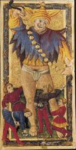
The LOVERS card, shows not just 2 lovers but the card represents the bloodline of the heresy moving in couples across the stage of Europe. The central woman wears a headdress shaped like the letter M, it probably is either for Mary Magdalene or for the Merovingian. It is not accidental. The real name of this card is "The Vine."
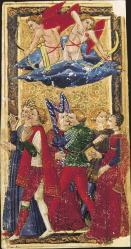
The HERMIT is Peter the Hermit, preacher of the 1st crusade. He holds an hourglass, showing it is time to liberate Jerusalem as it is one millennium since the temple was destroyed.
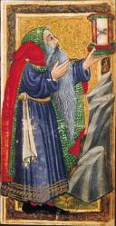
STRENGTH shows a woman repairing a pillar, the left pillar of the temple of Solomon with its "lily Work" at the top. The pillar is named Boaz (strength) in Hebrew Scrip (I Kings 7:21), which is associated with the lion of the tribe of Judah.
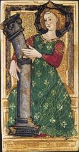
CHARIOTEER stands on top of his chariot, showing victory, probably of the templars in bringing back treasure from Jerusalem, which are still unknown
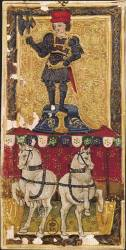
WHEEL OF FORTUNE is missing but most probably (based on extant decks) represents the changing fortunes of the templars who were persecuted and in 1307 rounded up as heretics in France.
JUSTICE the female virtue shows a woman holding the scales. The templars were tortured by the Inquisition for 7 years in an attempt to discover the hiding place of their reputed treasure.
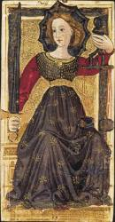
HANGED MAN could be called the tortured templar. The Leg has long been a metaphoric euphonism for the genitals. It is at the same time a subtle reference to the sacred bloodline and to the crippled grail king Anfortas. The money bags probably = the treasure they wouldn't reveal, possible because the treasure had nothing to do with material wealth, but the bloodline of Jesus.
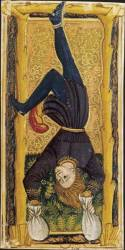
DEATH, shows the pope and his 2 cardinals trampled beneath the hooves of the wild ass. Jacques de Molay, burned at the stake in 1314 as last grand master of the templars, prophesied that King Philip IV of France and Pope Clement V would join him in less than a year. They died within the year.
This card depicts the death of the repressive establishment that collaborated to destroy the truth of the grail Church.
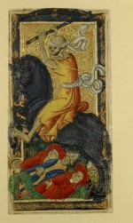
PRUDENCE shows a woman pouring water one vessel to another. Idea is the tenets thought to be exterminated, survive by being transferred to another vessel.
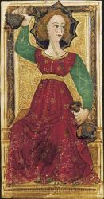
DEVIL is a visual representation of the "bully" of the Middle Ages, the Inquisition that was formed to root out the heresy and used to quell all free thinking. Its slaves are not the heretics, but the orthodox.
TOWER - is a haunting reference to the Magdal-eder, the "stronghold" of Daughter Zion in exile. it portrays the destruction of the City of God that was the millennial hope of the heretics. In a world that denies and represses truth it cannot stand.
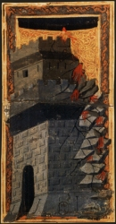
Missing is THE STAR, but in later decks a girl is pouring water from 2 vases on the ground, a sign of hope for the future regeneration of the spirit and truth. It will help the desert to bloom in centuries to come.
MOON - represents both the goddess and occult. Two men are working, calculating, a graphic illustration of the esoteric belief that the reality on Earth mirrors the order of the cosmos. "AS ABOVE, SO BELOW" hermetic axiom
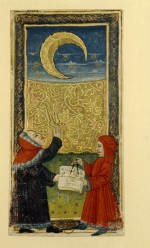
SUN shows a young girl holding a spindle. She is Brior Rose, who pricked her finger and fell asleep until a prince finally hacked his way to her and awoke her.
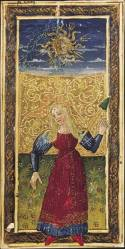
Taken with the former two cards, the Star and the Moon, we see that the water of spirit and truth poured out has become two streams that carry the tenets of the heresy. One of these, the occult sciences and secret traditions of some societies, does so under cover of darkness (the Moon). The other stream, folktale, carries the secret in the light of day. Sometimes the safest hiding place is in the open.
JUDGEMENT- This is not the last judgement but a call to "awake, o sleeper" to enlightenment. Taking personal responsibility for one’s actions. It is Reveille, not taps.
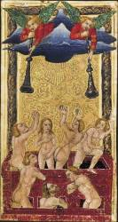
WORLD the final card is the fulfillment of this promise when the righteous ruler with crown, orb and scepter has dominion over all the Earth, enclosed in the mystic circle of perfection. The reign of God has become actual.
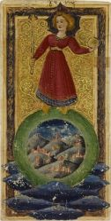
THE SUITS OF THE TAROT are 4, like in the modern deck.
PENTACLES, (now called diamonds) was an occult symbol for man. The Geography of the area of Provence where the five mountain peaks form a pentagram in Albigensian territory a natural temple to their Lady, M---represents Earth
The SCEPTER OR ROD, (now clubs) may be the most important as it was a flowering rod or staff representing the "root of Jesse" referred to in the War Scroll found at Qumran.--fire
CUPS of course, represented the chalice and today is our hearts and finally---water
SWORDS (now our spades) represent the intellect, truth winning out but also alchemically, it is air.
ARTISTS such as Botticelli hid symbols in his pictures after a conversion experience of unknown content about 1483 at about age 38, his paintings changed.
Whatever happened from this year on symbols of the Grail heresy began to appear in his pictures.
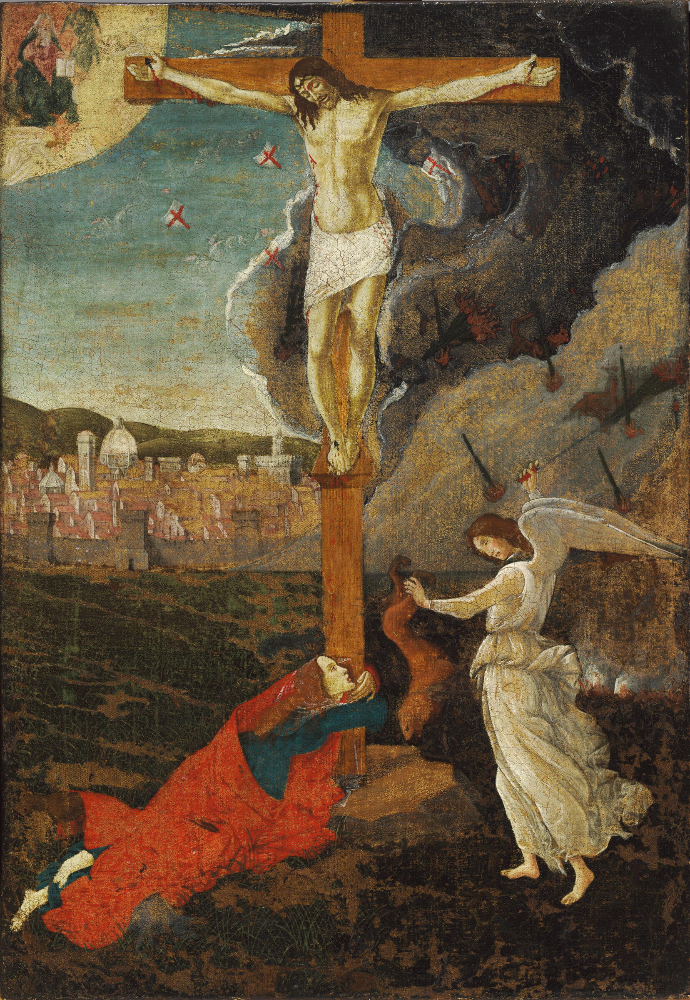
For example, his picture "Mary Magdalen at the Foot of the Cross" painted in 1500 shows Mary Magdalene clinging to the cross. On the right is an angel gripping a fox upside down by the tail. Dark storm clouds are being driven away and God the Father is seen blessing the scene. Angels are descending with shields bearing a red X, (which represents enlightenment to the Grail heretics, union of opposites, but which the orthodox made into a symbol of evil, the world, the flesh and the devil = sex)
It appears as though the angels with the red crosses are dispelling the darkness that enshrouds the relationship of Jesus and MM. The fox is a Gnostic symbol for pious fraud. For these of the Grail heresy, the clergymen of the Roman church were foxes.
The fox in this painting represents the fraud of the orthodox church which insisted Jesus was celibate and spoiling the vine by denying the bloodline of Jesus. The red crosses represent the priory of Zion who protect the tenets of the Grail.
Fra Angelico, an Italian painter also used esoteric symbols in his paintings, though he has always been considered as orthodox. He used alchemical colors representing union of opposites, but so subtly that it was not nearly as obvious.
Numerous other artists in paintings indicate a knowledge of the Grail heresy. but one must distinguish between those who used the symbols knowing what they were and those who just used them.
THE GRAIL STORIES IN FOLKLORE
I have already mentioned how Brior Rose, or better known as Sleeping Beauty, carried the meanings of the Grail heresy thru the ages. CINDERELLA is another favorite.
Two facts are relevant to our search for relics: first she was a "lost feminine", scorned and kept in "exile" and obscurity, relegated to the kitchen and her face, as her name suggests, was covered with "soot". She was an echo of the Black Madonna image, the "dark" serving girl recalls the swarthy bride of Song of Solomon.
It also recalls Sarah, the dark-skinned child with MM. Feminists who despise the insinuation that the woman must be fulfilled by a man miss the point of the story: It is the prince who is passionately seeking his lost counterpart.
SNOW WHITE is yet another fairy tale of a wicked stepmother who orders her murdered and tries to keep the prince from his counterpart. She is trying to keep the bride from replacing herself.
REPUNZEL is imprisoned in a tower by a wicked witch who takes her from her father. The clues here are her hair, with which Mary Magdalene wiped the feet of Jesus and long enough for the prince to climb, her beautiful voice (song of songs: the voice of the bride) and the tower (magdala), which the prince finally conquers.
The point is the prevalence of the theme of the wounded, lost, or imprisoned feminine counterpart of the handsome prince. The earliest known versions of the Cinderella story in Europe date from about the 9th century.
This was the very period when the Merovingian kings had been deposed and supplanted, their heritage usurped and obliterated by the Carolingian heirs of Pepin in alleged collusion with the Vatican. Perhaps the "stepmother" who tried so often to destroy the little princess deserved her evil reputation as it well could be "Mother church"